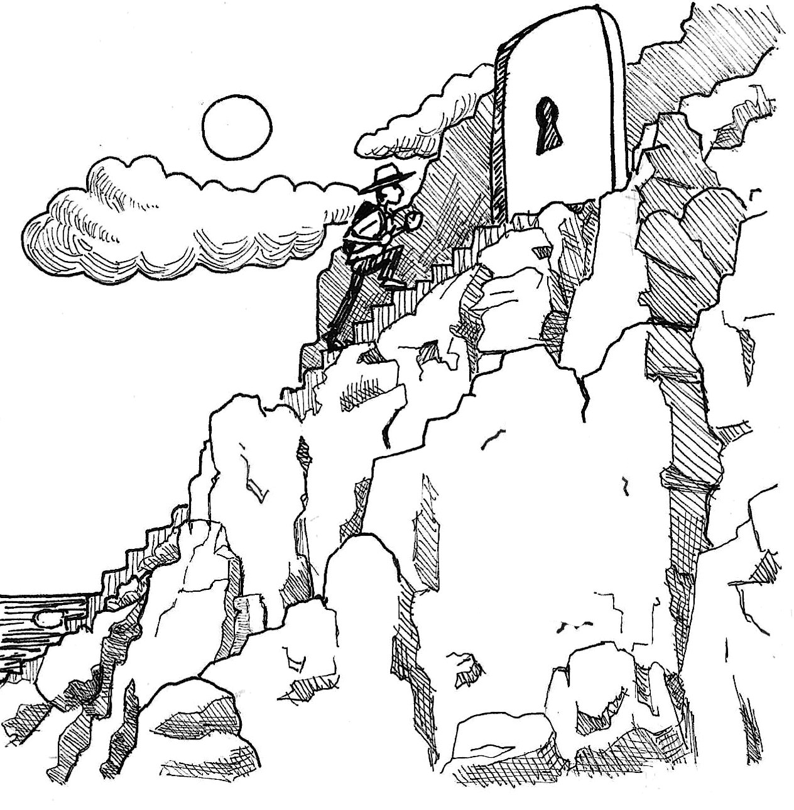
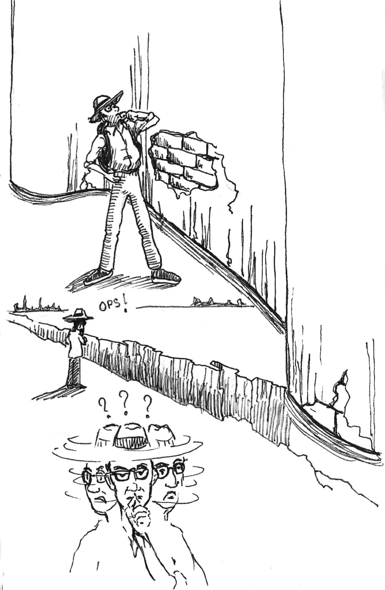
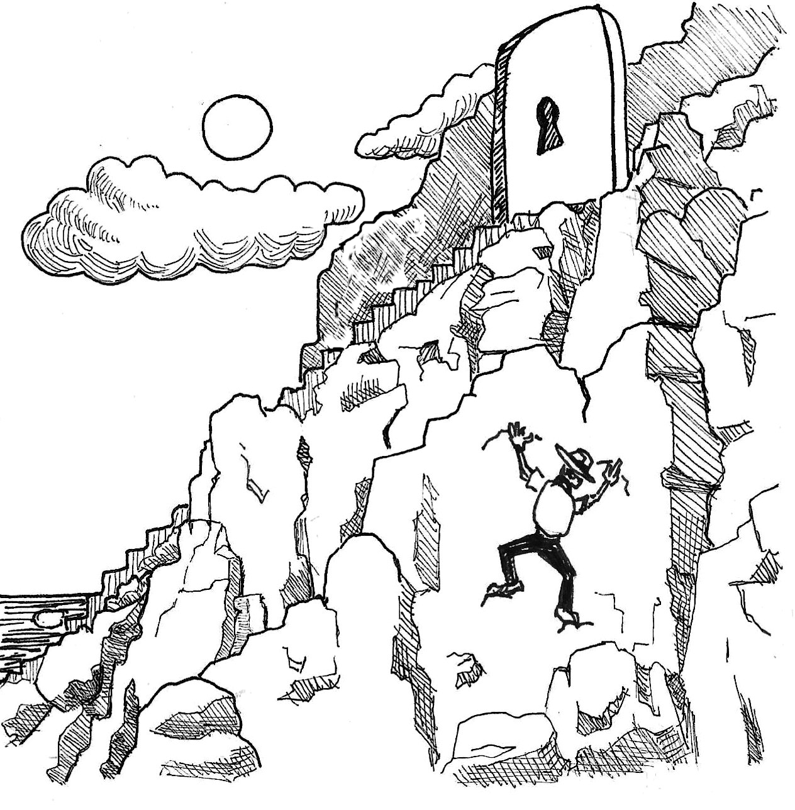
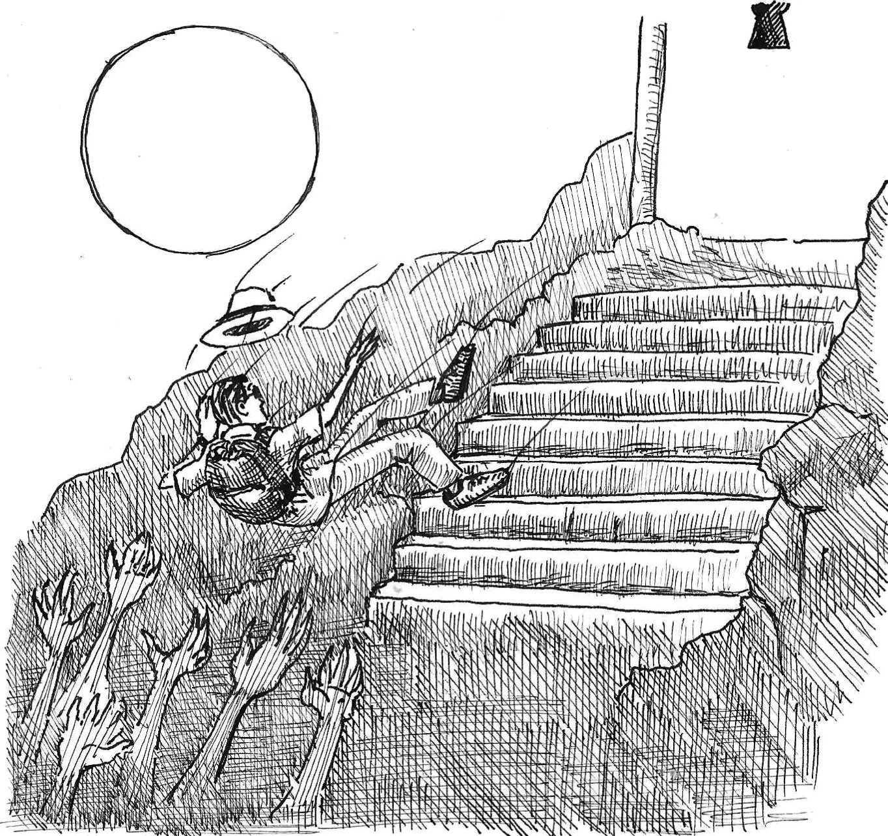
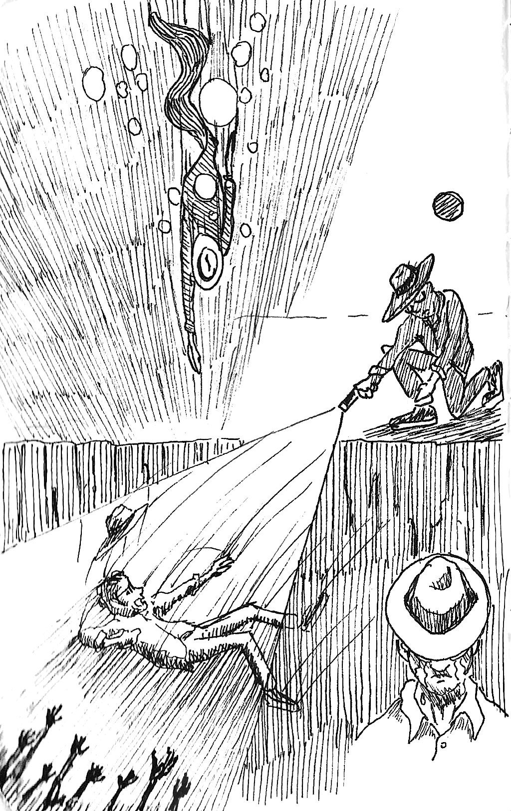
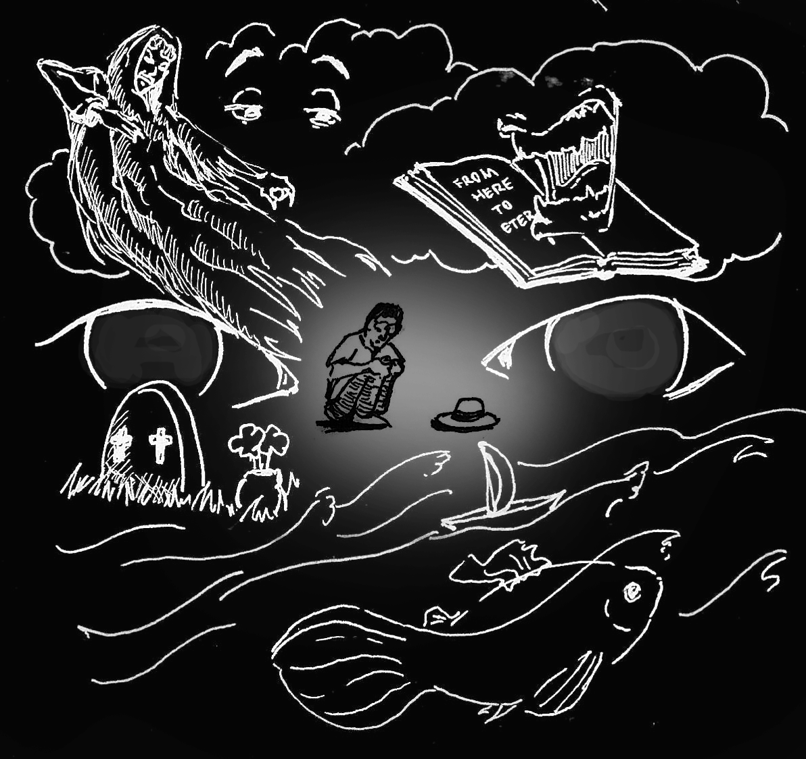
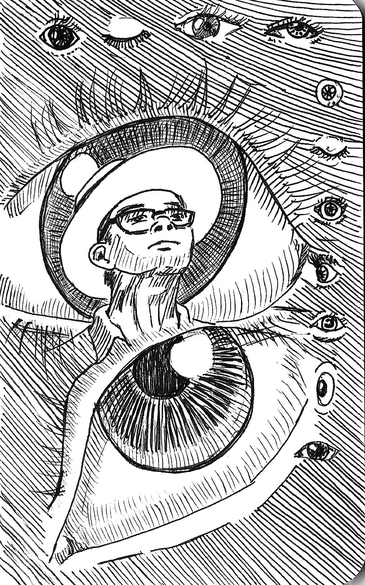
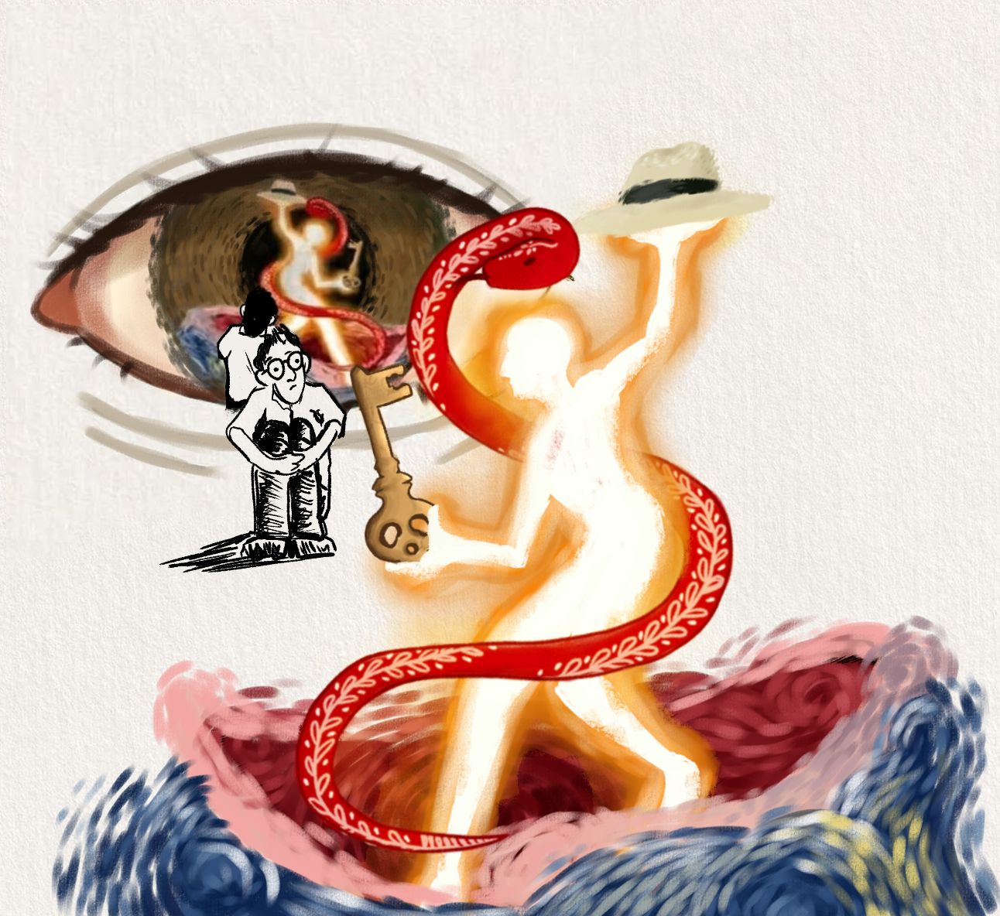
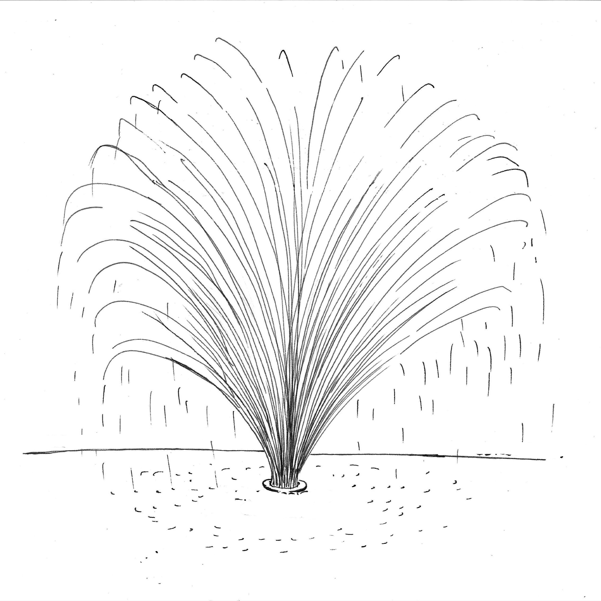
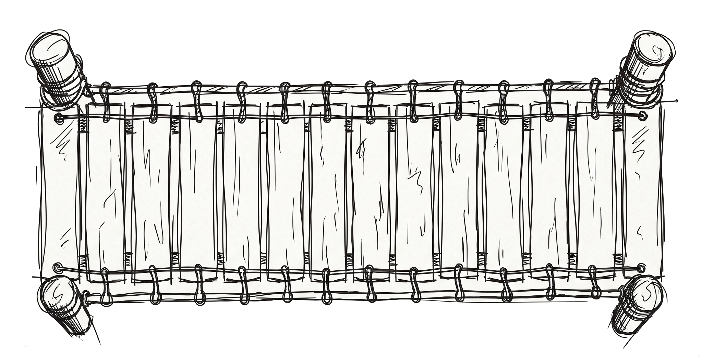

Teorias da Psicologia Analítica
A energia psíquica (libido) “é a intensidade do processo psíquico, seu valor psicológico”. Não se trata de valor em acepção moral, estética ou intelectual. Valor tem aqui o significado de intensidade, “que se manifesta por efeitos definidos ou rendimentos psíquicos”. Energia psíquica é um conceito abstrato de relações de movimento, algo inapreensível, um X, comparável (mas não idêntica) à energia física.
Energia é a intensidade do processo psíquico, seu valor psicológico. Mas não se trata de valor atribuído por considerações morais, estéticas ou intelectuais; o valor psicológico é simplesmente estabelecido por sua força determinante que se manifesta em certos efeitos (“produções”) psíquicos. Também não entendo por libido uma força psíquica.
Todos os fenômenos psíquicos são de natureza energética. Os complexos são nós de energia [...] os arquétipos são núcleos de energia em estado virtual e que os símbolos são máquinas transformadoras de energia.










Há uma destinação, uma possível meta além das fases ou estádios de que tratamos na primeira parte deste livro: é o caminho da individuação. Individuação significa tornar-se um ser único, na medida em que por “individualidade” entendermos nossa singularidade mais íntima, última e incomparável, significando também que nos tornamos o nosso próprio si-mesmo [totalidade psíquica]. Podemos pois traduzir “individuação” como “tornar-se si-mesmo” (Verselbstung) ou “o realizar-se do si-mesmo” (Selbstverwirklichung).
A individuação, portanto, só pode significar um processo de desenvolvimento psicológico que faculte a realização das qualidades individuais dadas; em outras palavras, é um processo mediante o qual um [ser humano] se torna o ser único que de fato é. Com isto, não se torna “egoísta”, no sentido usual da palavra, mas procura realizar a peculiaridade do seu ser e isto, como dissemos, é totalmente diferente do egoísmo ou do individualismo.
Percorremos a arquitetura da psique: a consciência e suas quatro funções, a energia que a atravessa em progressão e regressão, o inconsciente pessoal e coletivo como fonte e como sombra, e os passos de um processo que não se fecha — a individuação. Compreender essa dinâmica é também um convite: reconhecer, na própria experiência, os mesmos movimentos que aqui tomaram a forma de imagem e conceito.
O processo de individuação só é real se o indivíduo estiver consciente dele e, consequentemente, mantendo uma ligação viva com ele. Não sabemos se o pinheiro tem consciência do seu processo de crescimento, se aprecia ou sofre as diferentes alterações que o modelam. Mas o homem, certamente, é capaz de participar de maneira consciente do seu desenvolvimento. Chega mesmo a sentir que, de tempos em tempos, pode cooperar ativamente com ele, tomando livremente várias decisões. E essa cooperação pertence ao processo de individuação, no seu sentido mais preciso.
As Obras Completas de Jung citadas aqui seguem a edição brasileira da Editora Vozes. Diferentes impressões preservam a mesma divisão por volume e a mesma numeração de parágrafo (§) — por isso cada citação (OC/volume, §parágrafo) localiza o trecho original independentemente da edição em mãos.
JUNG, C. G. Obras Completas. Petrópolis: Vozes.
Anos e tiragens variam conforme a edição — confira a ficha catalográfica do exemplar utilizado.